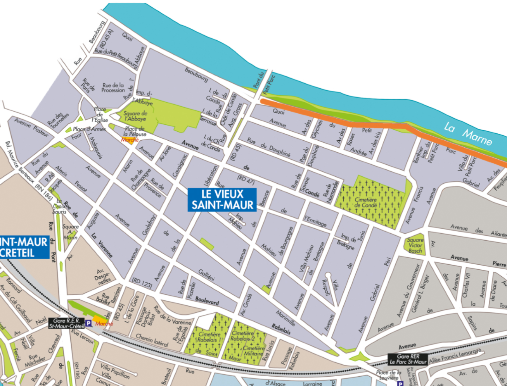
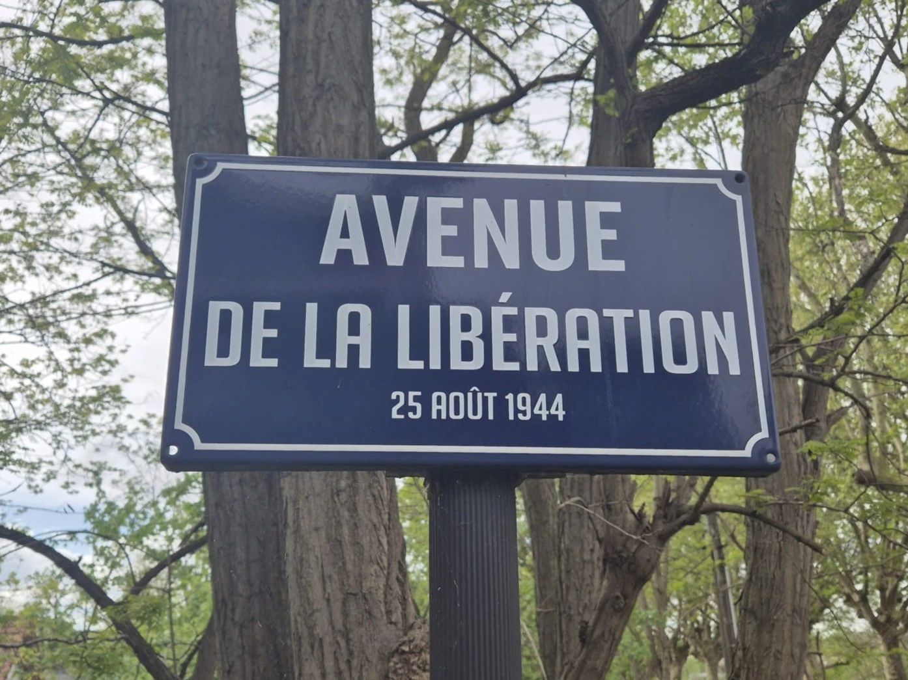
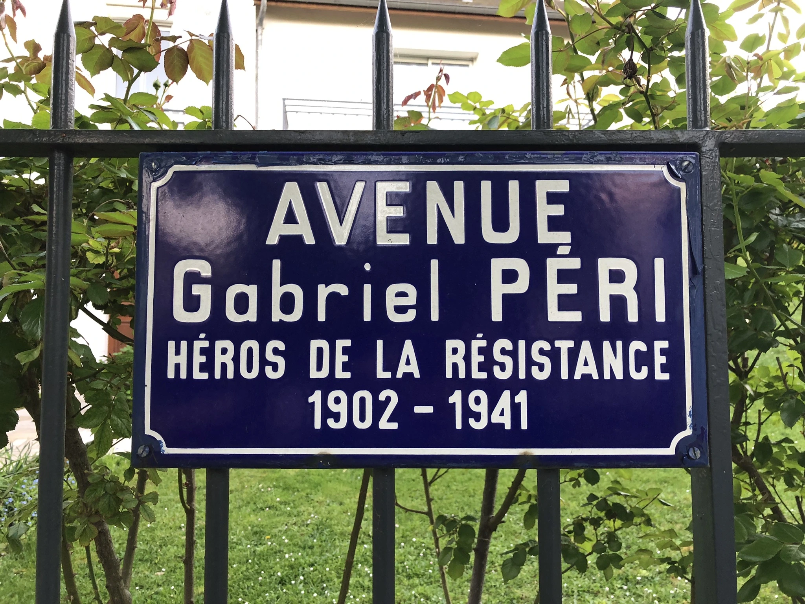
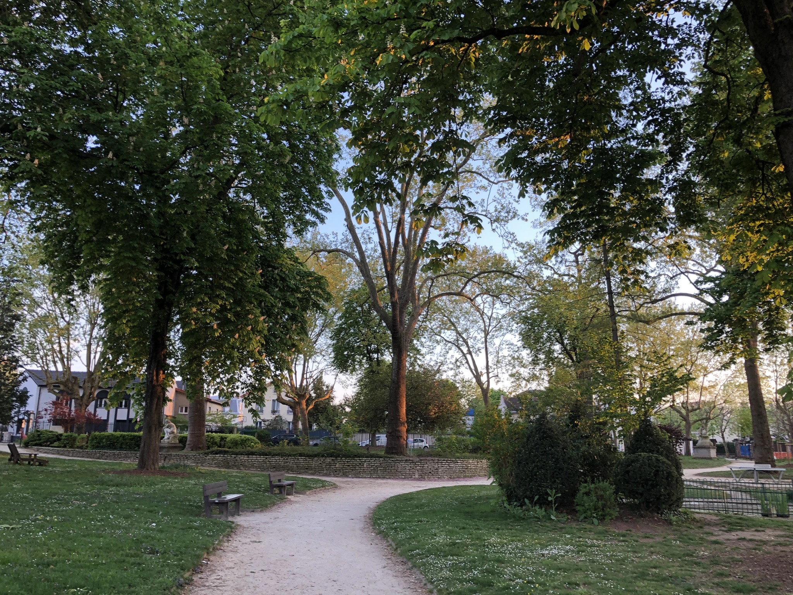

Retour à la carte
Le quartier du Vieux Saint-Maur

l'Avenue de la Libération

Découvrez l'histoire de l'avenue de la Libération
l'Avenue Gabriel Péri

Découvrez l'histoire de l'Avenue Gabriel Péri
Le Square Victor Basch

Découvrez l'histoire du Square Victor Basch